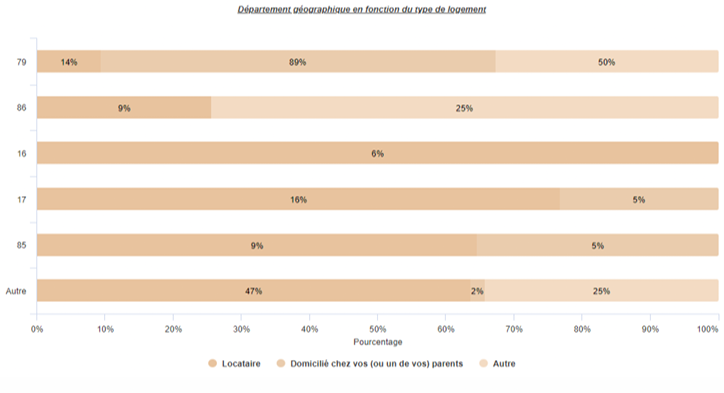
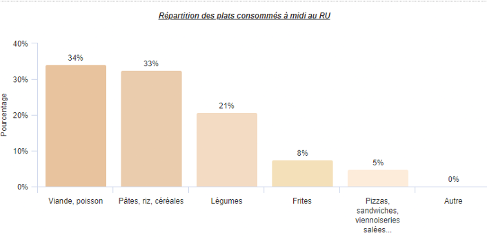
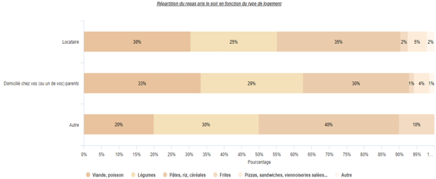
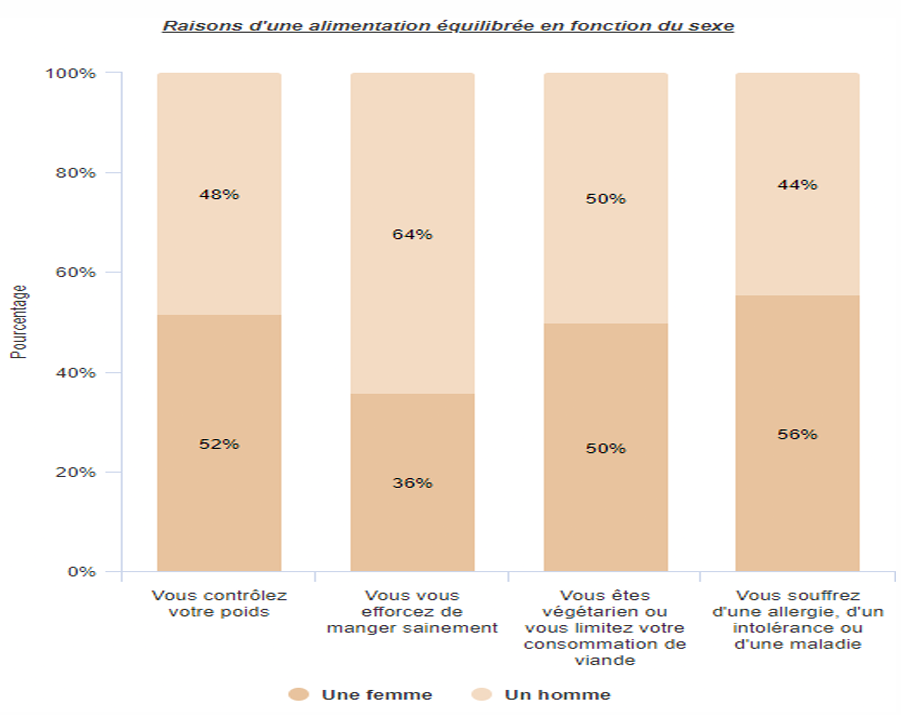
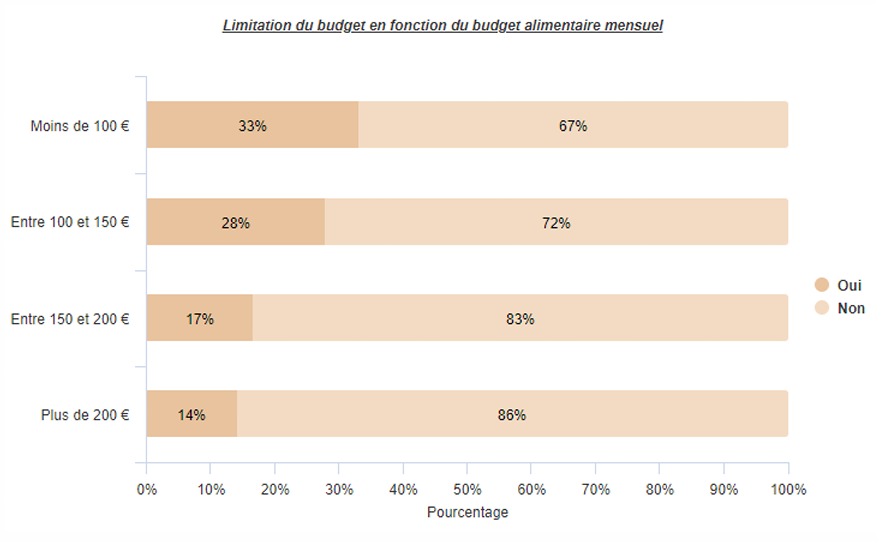
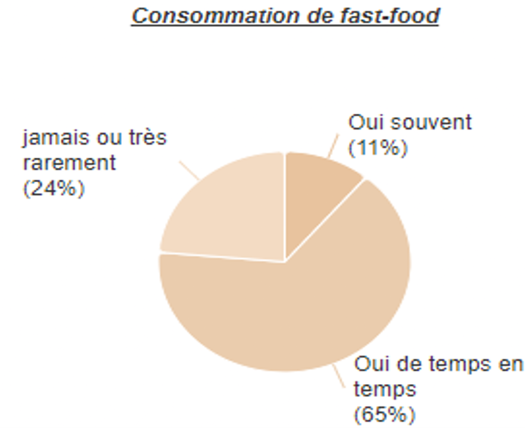
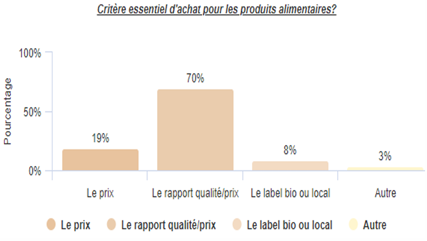
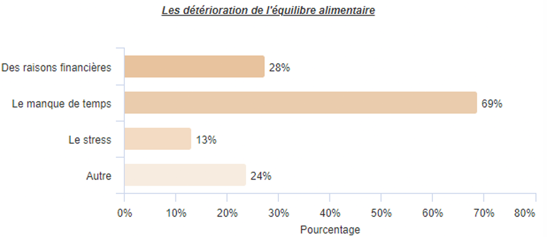

Dans le cadre de cette unité d'enseignement, nous avons piloté une étude complète sur les habitudes alimentaires des étudiants niortais. L’objectif central consistait à appréhender leurs pratiques réelles de consommation, à évaluer leur budget moyen et à identifier les facteurs socio-économiques ou temporels qui influencent directement la structure de leurs repas au quotidien.
Nous avons défini des axes d'études précis (budget mensuel, fréquence des repas, typologies de produits achetés). Un travail approfondi a été mené sur l'enchaînement logique des filtres et la création d’un organigramme de structure pour éviter toute déperdition ou biais de réponse.
Diffusion multicanal du questionnaire auprès des étudiants de l’IUT de Niort permettant d’atteindre un volume robuste de 377 observations. Une phase de tri à plat et de nettoyage a été réalisée pour valider la cohérence des bases de données de l'échantillon.
Modélisation des variables via le logiciel d'enquête Sphinx et analyses complémentaires sous Excel. Nous avons procédé à des tris croisés (ex: croisement entre le sexe ou le type de logement et le budget alimentaire moyen) pour isoler des comportements significatifs.
La phase finale a donné lieu à la rédaction d’un rapport d'analyse synthétique de 4 pages au format journalistique. En plus des constats statistiques purs, ce document intégrait des pistes d'action concrètes destinées à la vie étudiante (mise en place d'ateliers de cuisine abordable, évolution de l'offre des services de restauration de proximité).








Cette étude d'opinion m'a permis de valider des jalons précis du référentiel de compétences de notre BUT :
Définition d'un plan d'enquête cohérent, formulation neutre et ciblée des questions, et construction d'une arborescence logique (conditions d'affichage et filtres) pour éviter tout biais de réponse.
Identification et traitement des réponses incomplètes, repérage des valeurs aberrantes ou extrêmes (outliers sur les budgets déclarés) et harmonisation des données textuelles brutes.
Mise en œuvre de tris à plat et de tableaux de contingence croisés (via Sphinx et Excel) pour isoler les facteurs explicatifs statistiquement significatifs (ex: impact du type de logement sur le budget réel).
Sphinx iQ Microsoft Excel Tris Croisés Data Viz